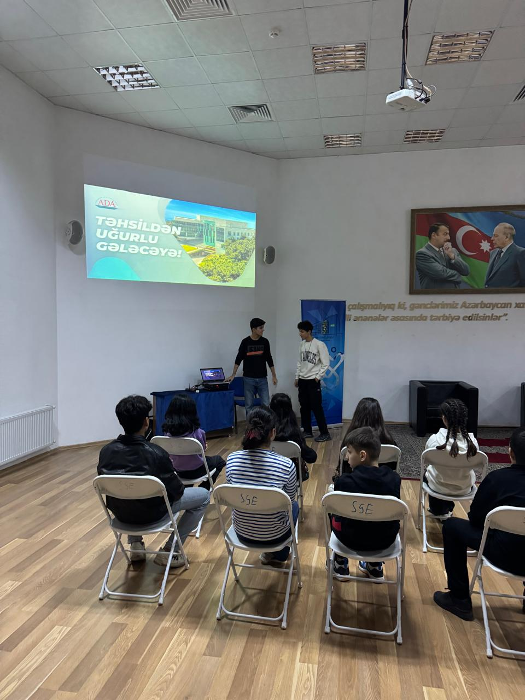
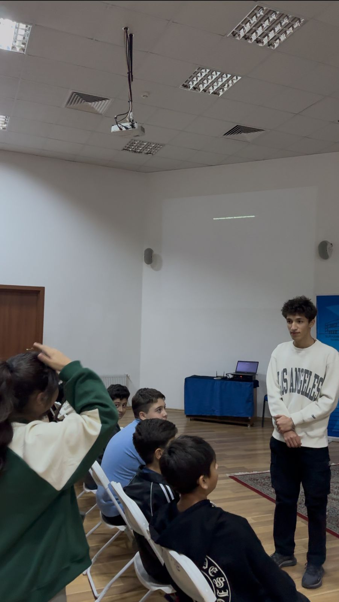
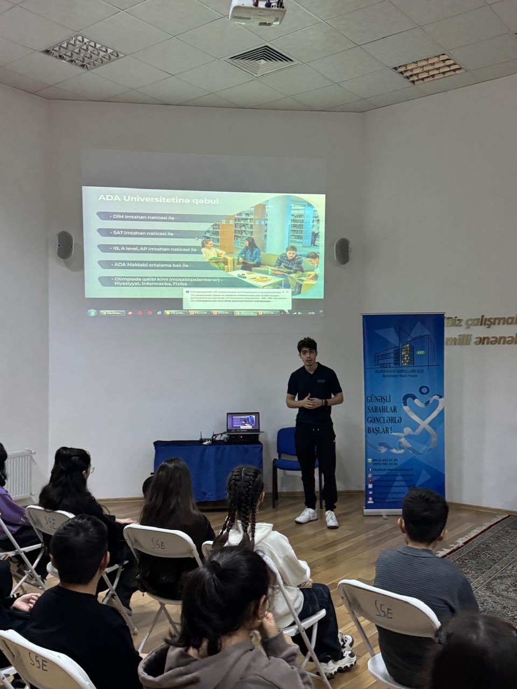
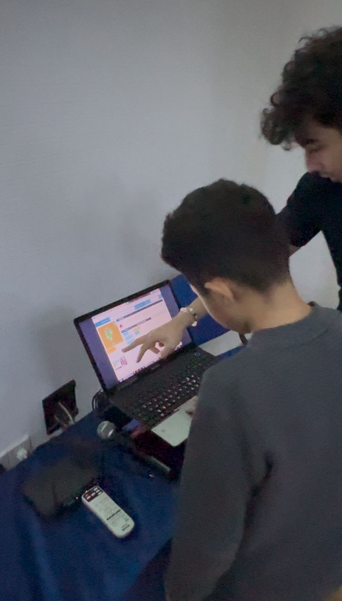

Learn the basics of coding in just an hour!
Team 19 from ADA University visited the “Gencler Evi” in Suraxani to engage sixth grade students in a hands-on coding workshop.The session aimed to introduce basic programming concepts and spark interest in technology. Despite limited resources, the team utilized the Code.org platform, making the session interactive and accessible. The visit began with an introduction to ADA University, highlighting its mission,and faculties. This motivated students to visualize their future in technical sciences. The workshop focused on coding concepts like algorithms, loops, and conditional statements, explained through examples and practical tasks.
 We would like to thank the students for their warm welcome because, as ADA University representatives, we wanted them to feel at home and show them what being part of the uniersity could offer. We presented ourselves, our names, areas of study, and the purpose of our visit to their school: to take their university experience to them and spark an early interest in technology and education. We then went further to say something about the ADA University, specifying its mission, core values, and the available unique opportunities. This is where we paid attention to ADA determination to create capable graduates in the field of technical sciences and other areas, together with the congenial atmosphere of the university.
 We were able to receive feedback from the students at the end of the session regarding what they felt and their reactions toward this new experience. Many described enjoying the process and shared how the work with coding seemed like a fun game—more than a lesson—and we took that as a positive indicator. They also said that in the future, they want to have more activities related to coding, and that was an encouraging signal indicating our efforts were fruitful.